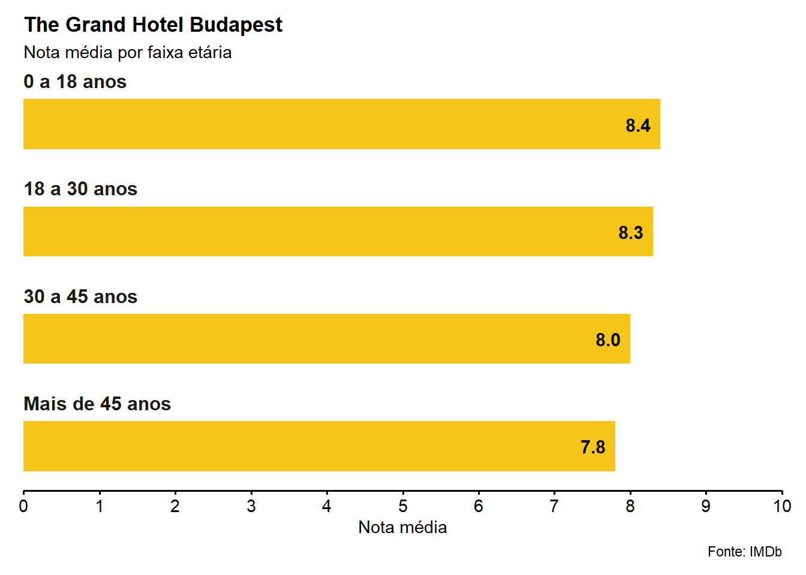

library(tidyverse)
library(knitr)
library(readxl)
# install.packages("devtools")
# devtools::install_github("curso-r/basesCursoR")
library(basesCursoR)Explorando IMDb
Trabalho final - R4DS II
Introdução
Esta é uma breve análise do Internet Movie Database (IMDb). Vamos utilizar, aqui, três bases disponibilizadas pela Curso-R que armazenam, cada qual, informações sobre milhares de filmes, sobre as pessoas que dirigiram, que atuaram e resumos estatísticos sobre a avaliação que estes filmes receberam.
Pacotes utilizados
Importando os datasets
# remotes::install_github("curso-r/basesCursoR")
imdb <- basesCursoR::pegar_base("imdb_completa")
imdb_pessoas <- basesCursoR::pegar_base("imdb_pessoas")
imdb_avaliacoes <- basesCursoR::pegar_base("imdb_avaliacoes")Vamos às perguntas!
1. Qual o mês do ano com o maior número de filmes? E o dia do ano?
Vamos começar apresentando o mês e, em seguida, o ano.
Meses do ano
imdb |>
# Criando uma coluna chamada "mês"
mutate(mes = month(as_date(data_lancamento),
# Identifica o nome do mês (jan, fev, mar, etc.)
label = TRUE)
) |>
# Cria uma nova coluna chamada "total" com a quantidade de filmes em cada mês
count(mes, name = "total") |>
# Coloca em ordem decrescente
arrange(desc(total)) |>
# Coloca em formato de tabela
knitr::kable(
# Define título
caption = "**Tabela 1: Quantidade de filmes lançados em cada mês**",
# Define o nome das colunas
col.names = c("Mês", "Total"),
# Centraliza
align = "c")| Mês | Total |
|---|---|
| out | 8734 |
| set | 7924 |
| mar | 7435 |
| nov | 7094 |
| abr | 7078 |
| dez | 6618 |
| fev | 6441 |
| ago | 6399 |
| jan | 6361 |
| mai | 6173 |
| jun | 5800 |
| jul | 5235 |
| NA | 4563 |
Dias do ano
imdb |>
# Criando uma coluna chamada "dia"
mutate(dia = day(as_date(data_lancamento))) |>
# Cria uma nova coluna chamada "total" com a quantidade de filmes em cada dia
count(dia, name = "total") |>
# Coloca em ordem decrescente
arrange(desc(total)) |>
# Coloca em formato de tabela
knitr::kable(
# Define título
caption = "**Tabela 2: Quantidade de filmes lançados em cada dia**",
# Define o nome das colunas
col.names = c("Dia", "Total"),
# Centraliza
align = "c")| Dia | Total |
|---|---|
| 1 | 7260 |
| NA | 4563 |
| 15 | 2831 |
| 14 | 2728 |
| 25 | 2727 |
| 21 | 2647 |
| 10 | 2626 |
| 20 | 2611 |
| 12 | 2600 |
| 28 | 2574 |
| 7 | 2555 |
| 6 | 2530 |
| 23 | 2523 |
| 18 | 2516 |
| 5 | 2515 |
| 22 | 2512 |
| 11 | 2508 |
| 13 | 2508 |
| 27 | 2489 |
| 3 | 2473 |
| 17 | 2454 |
| 26 | 2436 |
| 19 | 2435 |
| 16 | 2414 |
| 4 | 2384 |
| 24 | 2375 |
| 9 | 2364 |
| 8 | 2352 |
| 30 | 2343 |
| 29 | 2276 |
| 2 | 2240 |
| 31 | 1486 |
Bônus: dia da semana!
imdb |>
# Criando uma coluna chamada "dia_lancamento"
mutate( # A função weekday mostra o dia da semana
dia_lancamento = weekdays(as_date(data_lancamento))) |>
# Cria uma nova coluna chamada "total" com a quantidade de filmes em cada dia
count(dia_lancamento, name = "total") |>
# Coloca em ordem decrescente
arrange(desc(total)) |>
# Coloca em formato de tabela
knitr::kable(
# Define título
caption = "**Tabela 3: Quantidade de filmes lançados em cada dia da semana**",
# Define o nome das colunas
col.names = c("Dia da semana", "Total"),
# Centraliza
align = "c")| Dia da semana | Total |
|---|---|
| sexta-feira | 31362 |
| quinta-feira | 17372 |
| quarta-feira | 11211 |
| sábado | 7772 |
| terça-feira | 5646 |
| segunda-feira | 4692 |
| NA | 4563 |
| domingo | 3237 |
2. Qual o top 5 países com mais filmes na base?
Veja abaixo que foi necessário fazer uma transformação no dataset. Basicamente, utilizamos a função separate_longer_delim para “esticar verticalmente” a nossa base. Em outras palavras, desagregamos os valores da coluna pais em novas linhas, para contar quantas vezes cada país aparece em nossa bae.
imdb |>
# Separa os valores em novas linhas
separate_longer_delim(
# Coluna a ser desagregada
cols = pais,
# Delimitador
delim = ", "
) |>
# Cria uma nova coluna chamada "total" com a quantidade de filmes em cada país
count(pais, name = "total") |>
# Coloca em ordem decrescente
arrange(desc(total)) |>
# Seleciona os 5 primeiros
head(n = 5) |>
# Coloca em formato de tabela
knitr::kable(
# Define título
caption = "**Tabela 4: Top 5 países com mais filmes**",
# Define o nome das colunas
col.names = c("Dia", "Total"),
# Centraliza
align = "c")| Dia | Total |
|---|---|
| USA | 34325 |
| France | 8311 |
| UK | 7490 |
| India | 6373 |
| Italy | 5056 |
3. Liste todas as moedas que aparecem nas colunas orcamento e receita da base imdb_completa.
Mais uma vez foi necessário fazer uma transformação no dataset. Desta vez, utilizamos a função separate_wider_delim para “alongar horizontalmente” a nossa base. Criamos novas colunas com tipo de moeda do orçamento e da receita para, em seguida, listar todos os tipos que aparecem.
imdb |>
# Seleciona somente as colunas "orcamento" e "receita"
select(orcamento, receita) |>
# Separa os valores em novas colunas
separate_wider_delim(
# Coluna a ser desagregada
cols = orcamento,
# Delimitador
delim = " ",
# Nome das novas colunas
names = c("moeda_orcamento", "orcamento")
) |>
# Separa os valores em novas colunas
separate_wider_delim(
# Coluna a ser desagregada
cols = receita,
# Delimitador
delim = " ",
# Nome das novas colunas
names = c("moeda_receita", "receita")
) |>
# Pega somente as linhas únicas (para uma mesma moeda não aparecer duas vezes)
distinct(moeda_orcamento, moeda_receita) |>
# Retira os NA's
drop_na(moeda_orcamento, moeda_receita) |>
# Coloca em formato de tabela
knitr::kable(
# Define título
caption = "**Tabela 5: Moedas**",
# Define o nome das colunas
col.names = c("Orçamento", "Receita"),
# Centraliza
align = "c")| Orçamento | Receita |
|---|---|
| $ | $ |
| NOK | $ |
| GBP | $ |
| DEM | $ |
| FRF | $ |
| SEK | $ |
| ITL | $ |
| JPY | $ |
| RUR | $ |
| AUD | $ |
| HKD | $ |
| CAD | $ |
| ESP | $ |
| IEP | $ |
| DKK | $ |
| BEF | $ |
| INR | $ |
| EUR | $ |
| ISK | $ |
| PHP | $ |
| FIM | $ |
| BRL | $ |
| CZK | $ |
| NLG | $ |
| ATS | $ |
| CNY | $ |
| BND | $ |
| HUF | $ |
| THB | $ |
| ZAR | $ |
| SGD | $ |
| KRW | $ |
| PLN | $ |
| EGP | $ |
| MXN | $ |
| NZD | $ |
| CHF | $ |
| SKK | $ |
| BGL | $ |
| EEK | $ |
| TWD | $ |
| LVL | $ |
| TRL | $ |
| YUM | $ |
| ARS | $ |
| MYR | $ |
| IDR | $ |
| UAH | $ |
| RON | $ |
| VEB | $ |
| LTL | $ |
| CLP | $ |
| PKR | $ |
| NGN | $ |
| COP | $ |
| HRK | $ |
| IRR | $ |
| DOP | $ |
| ILS | $ |
| AMD | $ |
| BDT | $ |
| AED | $ |
Veja que temos diferentes tipos de moedas na coluna orcamento, mas apenas dólares ($) na coluna receita.
4. Considerando apenas orçamentos e receitas em dólar ($), qual o gênero com maior lucro? E com maior nota média?
Vamos começar analisando os gêneros com maior lucro e, depois, com a maior nota média.
Gêneros com maior lucro
Mais uma vez separamos o tipo de moeda e os valores correspondentes em novas colunas. Essa operação foi necessária para transformarmos os valores em formato numérico e, em seguida, fazer o cálculo do lucro.
imdb |>
# Separa o tipo de moeda e valor (essas duas infos. estavam juntas em uma mesma célula)
separate_wider_delim(
# Coluna a ser desagregada
cols = orcamento,
# Delimitador
delim = " ",
# Nome das novas colunas
names = c("moeda_orcamento", "orcamento")
) |>
# Separa o tipo de moeda e valor (essas duas infos. estavam juntas em uma mesma célula)
separate_wider_delim(
# Coluna a ser desagregada
cols = receita,
# Delimitador
delim = " ",
# Nome das novas colunas
names = c("moeda_receita", "receita")
) |>
# Separa os valores em novas linhas
separate_longer_delim(
# Coluna a ser desagregada
cols = genero,
# Delimitador
delim = ", " # É preciso colocar espaço depois da vírgula
) |>
# Filtra somente as linhas em que o tipo de moeda era o dólar ($)
filter(
# Detecta o "$"
str_detect(moeda_orcamento, "\\$"),
str_detect(moeda_receita, "\\$")
# OBS.: é preciso usar \\ para escapar o $, já que é um caracter especial
) |>
# Mutate para calcular o lucro
mutate(
# Transforma a variável 'orcamento' em dbl
orcamento = as.numeric(orcamento),
# Transforma a variável 'receita' em dbl
receita = as.numeric(receita),
# Cria uma nova coluna que armazena o lucro (receita - orcamento)
lucro = receita - orcamento,
# Coloca a coluna 'lucro' do lado da coluna 'receita'
.after = receita
) |>
# Agrupa pela variável 'genero'
group_by(genero) |>
# Soma o lucro por gênero
summarise(lucro_genero = sum(lucro)) |>
# Ordena em ordem decrescente o lucro
arrange(desc(lucro_genero)) |>
# Coloca em formato de tabela
knitr::kable(
# Define título
caption = "**Tabela 6: Gêneros com maiores lucros (em dólares)**",
# Define o nome das colunas
col.names = c("Gênero", "Lucro"),
# Centraliza
align = "c",
# Define a vírgula como separador dos decimais
format.args = list(decimal.mark = ",", big.mark = ".")
)| Gênero | Lucro |
|---|---|
| Adventure | 195.473.959.905 |
| Action | 164.413.780.869 |
| Comedy | 131.832.646.428 |
| Drama | 112.764.485.359 |
| Sci-Fi | 59.797.431.716 |
| Animation | 57.245.463.587 |
| Thriller | 52.470.159.829 |
| Fantasy | 52.428.727.679 |
| Family | 38.711.775.672 |
| Romance | 38.404.125.283 |
| Crime | 34.720.464.284 |
| Horror | 23.529.166.715 |
| Mystery | 23.389.002.706 |
| Biography | 12.968.911.303 |
| Music | 6.544.589.284 |
| History | 5.558.882.604 |
| Musical | 4.038.613.304 |
| Sport | 3.517.838.480 |
| War | 2.654.222.211 |
| Western | 1.414.730.076 |
| Documentary | -2.971.388 |
| Film-Noir | -13.663.005 |
Bônus: lucro corrigido pela inflação
Há de se considerar duas questões que tornam a comparação mais complexa do que a simples diferença entre a receita e o orçamento. Primeiro, se um filme apresenta, por exemplo, três gêneros, cada gênero deste filme terá um valor correspondente de orçamento, receita e lucro. Desse modo, gêneros que aparecem em vários filmes, mas de forma secundária, apresentarão, inevitavelmente, um lucro maior. Conforme não temos como diferenciar qual o gênero principal de cada filme (pois estão listados em ordem alfabética, não por relevância), fica somente o aviso.
Em segundo lugar, os valores de orçamento e receita não foram ajustados pela inflação, o que invalida a comparação entre filmes de diferentes épocas. Assim, aqui, vamos lidar somente com este segundo problema. Abaixo, apresentamos uma nova comparação com os valores de orçamento e receita reajustado pela inflação.
O primeiro passo, então, é buscar uma base de dados contendo uma série histórica com a inflação dos EUA. Uma rápida busca na internet e achamos o site do U.S. Bureau of Labor Statistics que disponibiliza o Consumer Price Index (CPI) dos EUA desde 1913 até 2022.
O site da série histórica com a inflação dos EUA pode ser acessado pelo link.
Base com série história do Consumer Price Index (USA)
Para fazer o ajuste pela inflação, queremos a média anual do Consumer Index Price. Por esta razão, tivemos que fazer uma transformação na base. Utilizando a função pivot_longer, transformamos cada mês em linhas e o colocamos em uma nova coluna chamada mes. Em seguida, agrupamos por ano (Year) e calculamos a média.
# Importando a base com a série histórica
cpi_usa <- read_excel("dados/SeriesReport-20231022214852_d55f27.xlsx", skip = 11)
cpi_usa <- cpi_usa |>
# Transforma as colunas em linhas
pivot_longer(
# Colunas a serem pivotadas
cols = Jan:Dec,
# Nome da nova coluna contendo os meses
names_to = "mes",
# Nome da nova coluna contendo os valores de cada mes
values_to = "cpi"
) |>
# Agrupa por ano
group_by(Year) |>
# Faz a média co CPI por ano
summarise(cpi_avg_annual = mean(cpi))Inflação 2022
Também salvamos em um objeto o CPI de 2022, último ano disponível na base.
current_inflation <- cpi_usa |>
filter(Year == 2022) |> pull() # Coloca a média do CPI em 2022 em um vetorFórmula para o ajuste pela inflação
Vamos utilizar a seguinte fórmula para fazer o ajuste:
\[valor_{atual} = valor_{ano\ T}(\frac{CPI_{atual}}{CPI_{ano\ T}})\]
Para confirmar os resultados manualmente, basta acessar o seguinte endereço: https://www.bls.gov/data/inflation_calculator.htm
Ajustando pela inflação
Salvamos a nossa base em um novo objeto com os valores do orçamento e receita ajustados pela inflação. Muitas transformações foram feitas até chegarmos aos valores ajustados. Resumindo os procedimentos:
Criamos novas colunas somente com os valores das colunas
orcamentoereceita;Filtramos somente os valores que estavam em dólares ($) e os filmes que foram lançados depois de 1913;
Transformamos os valores das colunas
orcamentoereceitaem formato numérico e calculamos o lucro;Fizemos um
left_joinentre aimdbe acpi_usa;Ajustamos o valores das colunas
orcamento,receitaelucropela inflação (para valores de 2022);Salvamos essas transformações em um novo objeto chamado
imdb_adjusted_inf(para usarmos novamente, caso necessário);Apresentamos em uma nova os gêneros de filmes com os maiores lucros corrigidos pela inflação (para valores de 2022).
# Base imdb com valores ajustados pela inflação
imdb_adjusted_inf <- imdb |>
# Separa o tipo de moeda e valor (essas duas infos. estavam juntas em uma mesma célula)
separate_wider_delim(
# Coluna a ser desagregada
cols = orcamento,
# Delimitador
delim = " ",
# Nome das novas colunas
names = c("moeda_orcamento", "orcamento")
) |>
# Separa o tipo de moeda e valor (essas duas infos. estavam juntas em uma mesma célula)
separate_wider_delim(
# Coluna a ser desagregada
cols = receita,
# Delimitador
delim = " ",
# Nome das novas colunas
names = c("moeda_receita", "receita")
) |>
# Separa os valores em novas linhas
separate_longer_delim(
# Coluna a ser desagregada
cols = genero,
# Delimitador
delim = ", " # É preciso colocar espaço depois da vírgula
) |>
# Filtra somente as linhas em que o tipo de moeda era o dólar ($)
filter(
# Detecta o "$"
str_detect(moeda_orcamento, "\\$"),
str_detect(moeda_receita, "\\$"),
# OBS.: é preciso usar \\ para escapar o $, já que é um caracter especial
# Filtrando da base somente os filmes lançados de 1913 em diante
ano >= 1913
) |>
# Mutate para calcular o lucro
mutate(
# Transforma a variável 'orcamento' em dbl
orcamento = as.numeric(orcamento),
# Transforma a variável 'receita' em dbl
receita = as.numeric(receita),
# Cria uma nova coluna que armazena o lucro (receita - orcamento)
lucro = receita - orcamento,
# Coloca a coluna 'lucro' do lado da coluna 'receita'
.after = receita
) |>
# Juntando a base do imdb com a série histórica do CPI dos EUA
left_join(cpi_usa, by = c("ano" = "Year")) |>
# Mutate para corrigir os valores para o ano de 2022
mutate(
# Corrige o orçamento pela inflação
orcamento_corrigido = orcamento*(current_inflation/cpi_avg_annual),
# Corrige a receita pela inflação
receita_corrigida = receita*(current_inflation/cpi_avg_annual),
# Corrige o lucro pela inflação
lucro_corrigido = lucro*(current_inflation/cpi_avg_annual))
imdb_adjusted_inf |>
# Agrupa pela variável 'genero'
group_by(genero) |>
# Soma o lucro por gênero
summarise(lucro_genero = sum(lucro_corrigido)) |>
# Ordena em ordem decrescente o lucro
arrange(desc(lucro_genero)) |>
# Coloca em formato de tabela
knitr::kable(
# Define título
caption = "**Tabela 7: Gêneros com maiores lucros (em dólares e ajustado pela inflação)**",
# Define o nome das colunas
col.names = c("Gêneros", "Lucro"),
# Centraliza
align = "c",
# Define a vírgula como separador dos decimais
format.args = list(decimal.mark = ",", big.mark = ".")
)| Gêneros | Lucro |
|---|---|
| Adventure | 293.330.056.464 |
| Action | 247.944.163.473 |
| Comedy | 215.318.776.126 |
| Drama | 200.920.074.805 |
| Animation | 92.994.811.385 |
| Sci-Fi | 87.446.061.075 |
| Fantasy | 87.197.672.931 |
| Thriller | 86.246.377.041 |
| Romance | 74.842.509.333 |
| Family | 73.441.442.457 |
| Crime | 60.835.905.146 |
| Horror | 38.951.801.713 |
| Mystery | 35.465.648.837 |
| Biography | 22.201.640.408 |
| History | 17.044.137.263 |
| Music | 11.964.241.209 |
| Musical | 7.455.862.127 |
| War | 7.256.261.079 |
| Sport | 6.904.519.461 |
| Western | 3.658.706.913 |
| Documentary | -9.563.831 |
| Film-Noir | -190.331.874 |
Gêneros com maior média
Continuamos usando somente os filmes em que as colunas orcamento e receita estavam em dólares ($) e, em seguida, apresentamos em formato de tabela os filmes com as maiores notas médias ponderadas.
# Generos com a maior nota média
imdb |>
# Filtra somente as linhas em que o tipo de moeda era o dólar ($)
filter(
str_detect(orcamento, "\\$"),
str_detect(receita, "\\$")
) |>
# Separa os valores em novas linhas
separate_longer_delim(
# Coluna a ser desagregada
cols = genero,
# Delimitador
delim = ", " # É preciso colocar espaço depois da vírgula
) |>
# Agrupa pela variável 'genero'
group_by(genero) |>
# Média ponderada da nota
summarise(nota_media = weighted.mean(nota_imdb, num_avaliacoes)) |>
# Ordena pela maior nota média ponderada
arrange(desc(nota_media)) |>
knitr::kable(
# Define título
caption = "**Tabela 8: Gêneros com as maiores notas (média ponderada pela quantidade de avaliações)**",
# Define o nome das colunas
col.names = c("Gêneros", "Nota média"),
# Centraliza
align = "c",
# Define a vírgula como separador dos decimais
format.args = list(decimal.mark = ",")
)| Gêneros | Nota média |
|---|---|
| Film-Noir | 8,062895 |
| Western | 7,880853 |
| War | 7,834881 |
| Biography | 7,601859 |
| History | 7,560579 |
| Documentary | 7,500000 |
| Drama | 7,447566 |
| Animation | 7,370283 |
| Crime | 7,268345 |
| Music | 7,179030 |
| Mystery | 7,168034 |
| Adventure | 7,150271 |
| Musical | 7,146379 |
| Sci-Fi | 7,138648 |
| Sport | 7,138044 |
| Thriller | 7,044245 |
| Action | 6,993408 |
| Romance | 6,968535 |
| Family | 6,922487 |
| Fantasy | 6,903316 |
| Comedy | 6,809419 |
| Horror | 6,491086 |
5. Dentre os filmes na base imdb_completa, escolha o seu favorito. Entãofaça os itens a seguir:
Primeiro, vamos salvar meu filme favorito em um vetor.
# Meu filme favorito
filme_fav <- imdb |>
filter(titulo_original == "The Grand Budapest Hotel") |> pull(titulo_original)Para responder os itens desta pergunta 5, vamos utilizar largamente a função pull(). O propósito é guardar informações em vetores para usá-los diretamente no corpo do nosso texto escrito em Quarto. Isso facilita bastante a escrita. Se eu escolher outro filme favorito, posso simplesmente escrever o nome dele no código acima e todos os outros códigos abaixos vão buscar as infos. desse meu novo filme favorito!
a) Quem dirigiu o filme? Faça uma ficha dessa pessoa: idade (hoje em dia ou data de falecimento), onde nasceu, quantos filmes já dirigiu, qual o lucro médio dos filmes que dirigiu (considerando apenas valores em dólar) e outras informações que achar interessante (base imdb_pessoas).
# Vamos extrair algumas informações de quem dirigiu meu filme favorito
# Nome
direcao_nm <- imdb |>
# Pega meu filme favorito
filter(titulo_original == filme_fav) |>
# Coloca o nome de quem dirigiu meu filme favorito em um vetor
pull(direcao)
# Idade
idade <- imdb_pessoas |>
# Pega o nome de quem dirigiu meu filme favorito
filter(nome == direcao_nm) |>
# Cria uma coluna chamada "idade" com a idade de quem dirigiu
mutate(idade = year(today()) - year(data_nascimento),
# Coloca a coluna "idade" depois da coluna "data_nascimento"
.after = data_nascimento) |>
# Coloca a idade em um vetor
pull(idade)
# Cidade de nascimento
cidade_nasc <- imdb_pessoas |>
# Pega o nome de quem dirigiu meu filme favorito
filter(nome == direcao_nm) |>
# Desagrega a coluna "local_nascimento" em três níveis
separate_wider_delim(
cols = local_nascimento,
delim = ", ",
names = c("cidade", "estado", "pais")
) |>
# Coloca a cidade em um vetor
pull(cidade)
# Estado de nascimento
estado_nasc <- imdb_pessoas |>
# Pega o nome de quem dirigiu meu filme favorito
filter(nome == direcao_nm) |>
# Desagrega a coluna "local_nascimento" em três níveis
separate_wider_delim(
cols = local_nascimento,
delim = ", ",
names = c("cidade", "estado", "pais")
) |>
# Coloca o estado em um vetor
pull(estado)
# País de nascimento
pais_nasc <- imdb_pessoas |>
# Pega o nome de quem dirigiu meu filme favorito
filter(nome == direcao_nm) |>
# Desagrega a coluna "local_nascimento" em três níveis
separate_wider_delim(
cols = local_nascimento,
delim = ", ",
names = c("cidade", "estado", "pais")
) |>
# Coloca o país em um vetor
pull(pais)
# Quantos filmes já dirigiu
qtde_filmes <- imdb |>
# Pega o nome de quem dirigiu meu filme favorito
filter(direcao == direcao_nm) |>
# Conta quantos filme já dirigiu
count(direcao) |>
# Coloca a qtde. de filmes que dirigiu em um vetor
pull(n)
# Lucro médio dos filmes que já digiriu (com valores ajustados pela inflação)
lucro_medio <- imdb_adjusted_inf |>
# Pega o nome de quem dirigiu meu filme favorito
filter(direcao == direcao_nm) |>
# Agrupa por direção
group_by(direcao) |>
# Calcula a média do lucro (já considerando os efeitos da inflação)
summarise(lucro_medio = mean(lucro_corrigido)) |>
# Coloca o lucro médio em um vetor
pull()Meu filme favorito é The Grand Budapest Hotel. Wes Anderson, responsável pela direção do filme, nasceu em Houston, que fica no Texas, USA. Atualmente, ele está com 55 anos de idade e já dirigiu um total de 9 filmes. O lucro médio de seus flimes é de cerca de 41.78 milhões de dólares (ajustados pela inflação!).
b) Qual a posição desse filme no ranking de notas do IMDB? E no ranking de lucro (considerando apenas valores em dólar)?
Novamente vamos salvar as informações de interesse em vetores para usá-los no corpo do nosso texto.
# Ranking de nota
# Id do meu filme favorito
id_filme_fav <- imdb |>
# Pega o nome do meu filme favorito
filter(titulo_original == filme_fav) |>
# Coloca o id do meu filme favorito emum vetor
pull(id_filme)
ranking_nota_filme_fav <- imdb_avaliacoes |>
# Coloca em ordem decrescente a nota media ponderada dos filmes
arrange(desc(nota_media_ponderada)) |>
# Cria uma coluna chamada "ranking"
mutate(ranking = dense_rank(desc(nota_media_ponderada))) |>
# Filtra o id do meu filme favorito
filter(id_filme == id_filme_fav) |>
# Coloca a posição (no ranking de média) do meu filme favorito em um vetor
pull(ranking)
# Ranking lucro
ranking_lucro_filme_fav <- imdb_adjusted_inf |>
# Coloca em ordem decrescente o lucro
arrange(desc(lucro_corrigido)) |>
# Cria uma coluna chamada "ranking"
mutate(ranking = dense_rank(desc(lucro_corrigido))) |>
# Agrupa pela id de cada filme
group_by(id_filme) |>
# Filtra o id do meu filme favorito
filter(id_filme == id_filme_fav) |>
# Ver nota 1
distinct(ranking) |>
# Coloca a posição (no ranking de lucro) do meu filme favorito em um vetor
pull(ranking)
# Nota 1: os filmes que possuem mais de um gênero aparecem mais de uma vez, conforme
# a transformação que fizemos acima. Assim, usamos a função distinct() para pegar
# somente uma vez a posição do meu filme favoritoNo ranking de notas do IMDb meu filme favorito fica na posição de número 18 e no ranking de lucro na posição de número 1014.
c) Em que dia esse filme foi lançado? E dia da semana? Algum outro filme foi lançado no mesmo dia? Quantos anos você tinha nesse dia?
dia_lancamento <- imdb |>
# Pega meu filme favorito
filter(titulo_original == filme_fav) |>
# Cria uma coluna com o dia do lançamento
mutate(dia_lancamento = day(data_lancamento)) |>
# Coloca o dia do lancamento em um vetor
pull(dia_lancamento)
dia_semana_lancamento <- imdb |>
# Pega meu filme favorito
filter(titulo_original == filme_fav) |>
# Cria uma coluna com o dia da semana
mutate(dia_semana_lancamento = weekdays(as.Date(data_lancamento))) |>
# Coloca o dia da semana em um vetor
pull(dia_semana_lancamento)
minha_idade <- imdb |>
# Pega meu filme favorito
filter(titulo_original == filme_fav) |>
# Cria um nova coluna com a minha idade
mutate(minha_idade = year(data_lancamento) - year("2001-02-09")) |>
# Coloca a minha idade em um vetor
pull(minha_idade)
dt_filme_fav <- imdb |>
# Pega meu filme favorito
filter(titulo_original == filme_fav) |>
# Coloca a data de lançamento em um vetor
pull(data_lancamento)
qtde_filmes_lancados_msm_dia <- imdb |>
# Pega meu filme favorito
filter(data_lancamento == dt_filme_fav) |>
# Conta quantos filmes foram lançados naquela data
count() |>
# Coloca a qtde em um vetor
pull()The Grand Budapest Hotel foi lançado em 2014-04-10. Ou seja, numa quinta-feira do mês de outubro de 2014. Além do filme de Wes Anderson, outros 19 filmes foram lançados naquela data. Na época, eu tinha apenas 13 anos de idade.
d) Faça um gráfico representando a distribuição da nota atribuída a esse filme por idade (base imdb_avaliacoes).
Para representar visualmente a distribuição da nota atribuída a The Grand Budapest Hotel por idade, nos inspiramos em um gráfico feito por Cedric Scherer. O link com o gráfico feito por ele está disponível neste link.
Antes de iniciar o ggplot, precisamos fazer algumas transformações.
# Arrumando a base
df <- imdb_avaliacoes |>
# Selecionando somente as colunas de interesse
select(id_filme, contains("nota_media_idade")) |>
# Alongando nossa base
pivot_longer(
cols = contains("nota_media_idade"),
names_to = "faixa_etaria",
values_to = "nota_media"
) |>
# Cria uma nova coluna com novos nomes para os valores da coluna 'faixa_etaria'
mutate(fx_etaria =
case_when(
faixa_etaria == "nota_media_idade_0_18" ~ "0 a 18 anos",
faixa_etaria == "nota_media_idade_18_30" ~ "18 a 30 anos",
faixa_etaria == "nota_media_idade_30_45" ~ "30 a 45 anos",
faixa_etaria == "nota_media_idade_45_mais" ~ "Mais de 45 anos"
)
)# Carregando as fontes do Windows
extrafont::loadfonts("win")
# Define theme base para todos os plots
theme_set(theme_minimal(base_family = "Helvetica"))
# Altera alguns elemetos visuais
theme_update(
panel.grid.minor = element_blank(),
panel.grid.major = element_blank(),
axis.line.x = element_line(color = "black", linewidth = .6),
axis.ticks.x = element_line(color = "black", linewidth = .6),
axis.title.y = element_blank(),
axis.text = element_text(family = "Helvetica", size = 11, color = "black"),
plot.margin = margin(10, 15, 10, 15),
plot.title = element_text(face = "bold"),
plot.background = element_rect(
# Altera o preenchimento
fill = "white",
colour = NA
)
)df |>
# Selecionando somente o filme de interesse
filter(id_filme == id_filme_fav) |>
# Inicia o gglot
ggplot() +
# Define valores dos eixos X e Y
aes(x = fx_etaria, y = nota_media) +
# Define a geomtria utilizada
geom_col(aes(fill = fx_etaria)) +
# "Gira" nosso gráfico
coord_flip() +
# Cria um gráfico para cada coluna
facet_wrap(~ fx_etaria, ncol = 1, scales = "free_y") +
# Faz algumas alterações no eixo Y (que é uma variável contínua)
scale_y_continuous(
breaks = seq(0, 10, by = 1),
expand = c(0, 0),
limits = c(0, 10)
) +
# Faz algumas alterações no eixo X
scale_x_discrete(
guide = "none",
expand = expansion(add = c(.8, .6))
) +
# Faz algumas alterações nos textos
theme(
strip.text = element_text(
hjust = 0,
margin = margin(1, 0, 1, 0),
size = rel(1.1),
face = "bold"
)
) +
# Adiciona textos nas geometrias
geom_text(
aes(
label = paste0(" ", sprintf("%2.1f", nota_media), " "),
#color = "black",
hjust = nota_media > .05
),
size = 4,
fontface = "bold",
family = "Helvetica"
) +
# Preenche manualmente as colunas com a cor #F5C518
scale_fill_manual(
values = c("#F5C518", "#F5C518", "#F5C518", "#F5C518"),
guide = "none"
) +
# Adicionando texto, subtítulo, fonte, etc.
labs(
title = "The Grand Hotel Budapest",
subtitle = "Nota média por faixa etária",
caption = "Fonte: IMDb",
y = "Nota média"
)